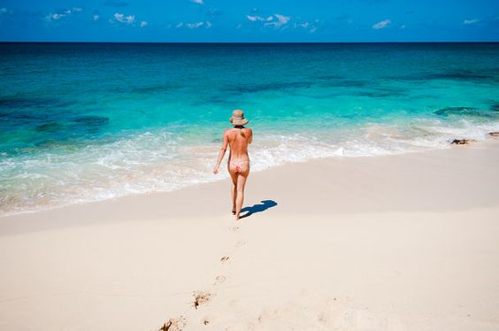
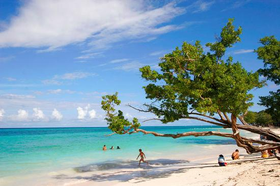
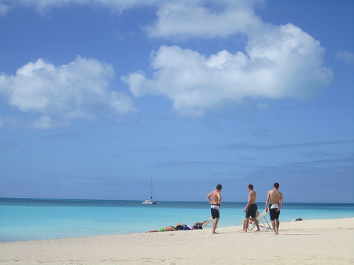
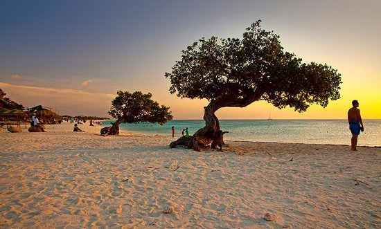
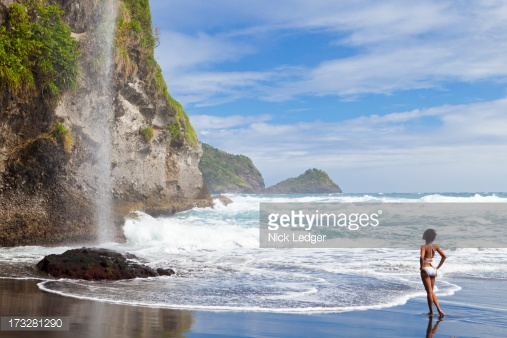

Saint-Martin
Een van de rustigste stranden van Saint Martin's, met alleen de zachte geklots van de golven te verstoren. De bar bij de La Samanna restaurant is de perfecte plek om te bekijken van de zonsondergang, dat is gewoon de beste. De turquoise zee, witte stranden en resident pelikanen, plaatst dit strand in een droom als instelling.
Cuba
Het strand van Guardalavaca ligt op ongeveer 2 mijl van wit zand met turquoise gekleurd water. Guardalavaca is bekend om zijn sportieve activiteiten zoals snorkelen, duiken, diepzeevissen, tennis, windsurfen, volleybal, catamaran zeilen en kajakken.
Barbuda
Onontgonnen en onbedorven Barbuda is een geweldige retraite en dit speciale strand is de ultieme ontsnapping.
Aruba
Hoewel het kan vaak overvol met een mix van New Jersey en Venezolanen, blijf het zand en water terugkomen voor meer. Dit is een speciale plek, die uitgegroeid de ultieme uitje voor zoveel mensen tot is. Kom als jezelf en nooit worden beoordeeld.
Dominica
De beloning aan het eind van deze wandeling van een steile klif naar het strand beneden, is een grote waterval crashen op het strand. Een van de meest memorabele ervaringen ooit strand